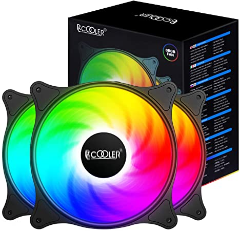

Disipador
Uno de los principales riesgos de un dispositivo electrónico es que se sobrecaliente. El calor puede hacerle fallar en su funcionamiento pero cuando este pasa un límite, el fallo será irreparable. Cualquier ordenador de sobremesa, ordenador portátil o convertible es sensible al calor. Especialmente en un ordenador gaming o portátil gaming, cuyo uso exigente puede elevar la temperatura del dispositivo. Por ello elementos como un disipador de calor, un ventilador CPU o cualquier otro que se encargue de la refrigeración PC son esenciales en un ordenador.
Se conoce como disipador PC o disipador CPU a una pieza o elemento de un ordenador que se encarga de dispersar el calor del dispositivo para evitar su sobrecalentamiento.
Pero no solo los ordenadores tienen disipadores de calor. Otros dispositivos electrónicos como tablets, smartphones, o Smart TV también disponen de este tipo de elementos de refrigeración.
¿Cómo funciona un disipador de calor? Es muy sencillo. Este tiene un conductor térmico que transfiere el calor lejos de la CPU en un diseño con un ventilador que permite que el calor se disipe con facilidad en el aire y hacia otras zonas menos sensibles del ordenador así como hacia el exterior del mismo.
Pero un disipador de calor no tiene por qué ser el único elemento encargado de evitar el sobrecalentamiento en un dispositivo electrónico. Un ventilador de ordenador o un sistema de refrigeración líquida, por ejemplo, también contribuyen a evitar el sobrecalentamiento del aparato. Por ello en ordenador de uso muy exigente como un ordenador gaming, suele instalarse más de un sistema de ventilación y refrigeración.
